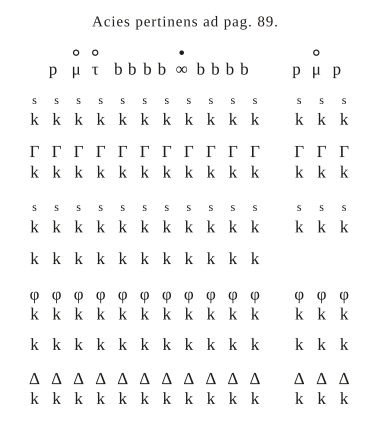
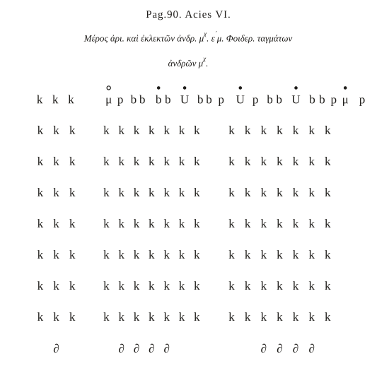
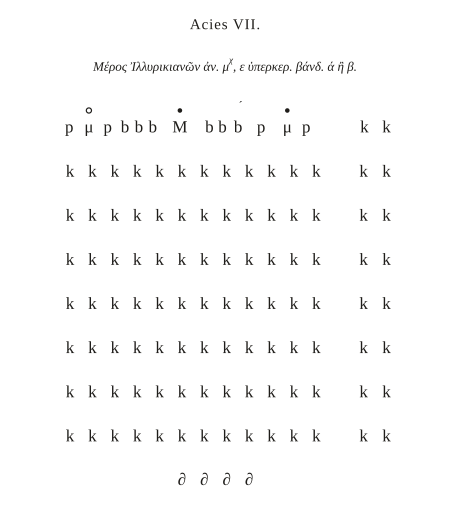
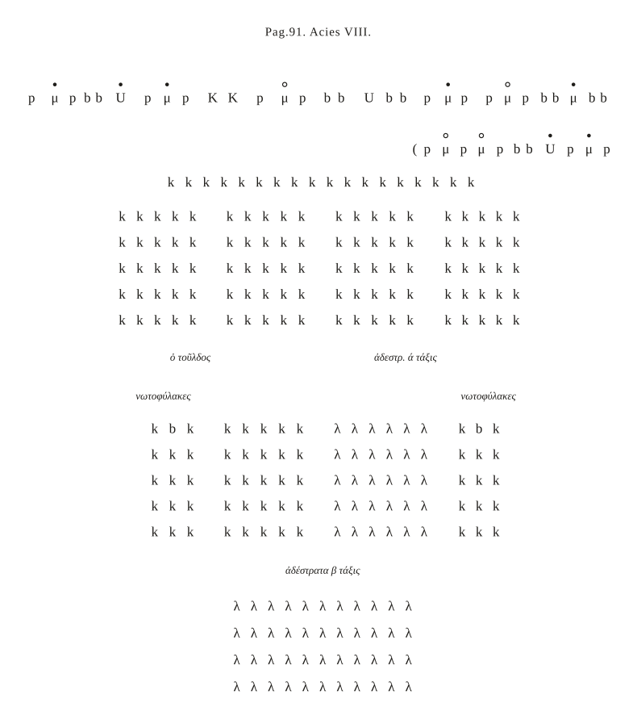
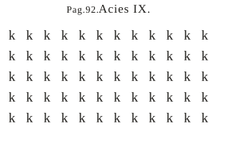
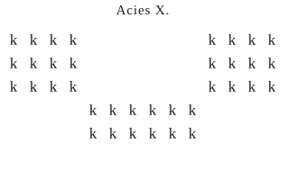
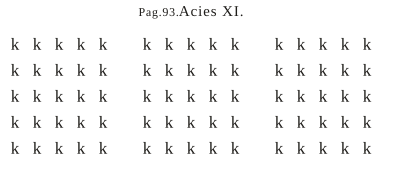
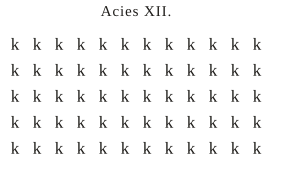
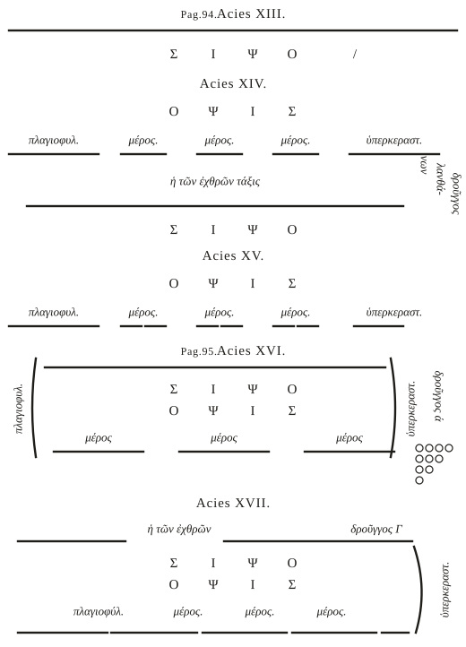

タグマの配置 Περὶ στάσεως τάγματος ／ De collocatione tagmatis
この巻を3行で
- 第2巻が騎兵の戦列の考え方なら、第3巻は図と号令による実地編です。
- 騎兵の基本部隊タグマ（例として310人）の隊形と、ラテン語の号令による訓練のしかたを述べ、メロスと全軍の並べ方を陣形図で示します。
- 最後に、第一線・側面防護兵・包囲兵・第二線・伏兵のそれぞれに、戦いの中でどう動くかを命じます。
このサイトでは、原典から読んだことと、原典にない一般的な知識とを分けて書きます。原典にない補足には 補足、筆者の読み方の推測には 推測、読みに自信がない箇所には 不確か の印を付けます。
はじめに：部隊と2つの騎兵
この巻を読むために、第1・2巻で決められたことを少しだけ確かめておきます。
- 部隊の大きさ：騎兵の基本の部隊がタグマ（バンドン、アリトモスとも）で、200〜400人。いくつかのタグマでモイラ（2000〜3000人）、3つのモイラでメロス（6000〜7000人まで）を作ります。
- 戦列：第一線（πρόμαχος、前で戦うもの）は中央・右・左の3つのメロス。その後ろに、全軍の3分の1ほどの第二線（βοηθός、助けるもの）を置き、そこに総司令官のストラテゴスがいます。
- 2つの役割の騎兵：前に飛び出して敵を追うクルソレスと、隊形を保ってその後に続き、クルソレスを守るデフェンソレスです。
- 両翼の特別な部隊：左翼の外に側面防護兵（回り込まれないよう守る）、右翼の外に包囲兵（敵の翼の外へ回り込む）を置きます。
章ごとの解説
第1章タグマの配置図の記号の説明
原典 p.78
第2〜5章の図で使う記号の一覧です。
| 記号（版面） | 意味 |
|---|---|
| ρ と τ を重ねた字 | 旗（バンドン） |
| X | タグマの指揮官 |
| B | ラッパ手（ブキナ手） |
| K（上に π） | 指揮官の外套（κάππα）を運ぶ者 |
| P（上に x） | ヘカトンタルコス（百人隊長） |
| I（上に x） | デカルコス。槍と盾を持つ |
| ＊ | ペンタルコス。槍と盾を持つ |
| ＊ | 列の3番目の兵。弓を持ち、盾なし |
| K（上に Δ） | 列の4番目の兵。弓兵で、盾なし |
| ＊ | 騎兵（兵） |
シェファーの注によると、星印（＊）の3つは写本に記号がなく、版面では星で代えてあります（注 p.429）。彼は、旗の記号はコンスタンティヌス帝以来の軍旗ラバルムの印から取ったもので、ヘカトンタルコスの記号は数字の P（100）に X（指揮官）を書き込んだもの、と説明しています。
列の中の武装は、先頭の2人が槍と盾、3番目と4番目が弓で盾なしと読めます。第2巻の「前の2人と最後尾が槍、間が弓」と合います。
不確か外套を運ぶ者とヘカトンタルコスの記号の上の小さな字が、ギリシア語の欄とラテン語の欄で入れ替わっています。
第2〜4章310人のタグマの3つの形
原典 p.78–80。欄外の標識 Acies I–III
例として310人のタグマを取り上げ、敵に近づくにつれて隊形を詰めていく3つの段階を示します（このページの図解1）。
- 第2章 間隔をあけて進む：戦いに向かって進み始めるときは、間隔をあけて歩きます。騎兵が押し合って馬が疲れず、各人が自由に向きを変えられるようにするためです。号令は LARGITER AMBULA（ゆったり歩け）。
- 第3章 横に詰める：敵が1マイルほどに来て、横に詰める必要があれば、号令 AD LATUS STRINGE（横に詰めよ）。シェファーによれば、stringe（締めよ）はローマ軍の決まった号令です（注 p.430）。
- 第4章 横と後ろに詰める：敵の戦列が矢の届く距離の3つか4つ分に来たら、号令 JUNGE（まとまれ）。進みながら短い間に横にも前後にも詰め、一つのかたまりになってぶつかります。
不確かこの3つの図（Acies I–III）と第5章の図（Acies IV）は、シェファーの写本になく、巻末にもありません。シェファーは「著者にとって小さくない損失だ」と書いています（注 p.430）。310人が何列・何段なのかも、本文には書かれていません。
第5章タグマの訓練のしかた
原典 p.80–89。欄外の標識 Acies IV
この巻でいちばん長い章で、騎兵のラテン語の号令が並びます。ギリシア語で書かれた本文の中でも、号令はラテン語のままです。シェファーは、これらはローマ軍の訓練で使われた決まったラテン語で、ほかの文献には見当たらないと言います（注 p.430）。
隊形が整ったら、まず伝令（マンダトール）が告げます：SILENTIUM. NEMO DEMITTAT. NEMO ANTECEDAT BANDUM.（静粛に。誰も旗を離れるな。誰も旗より前に出るな）。
| 号令 | 読み | 意味と使うとき |
|---|---|---|
| MOVE | モウェ | 動け。ラッパか、小旗を振る合図でも |
| STA | スター | 止まれ。盾を打つ音、手の合図、トゥーバ（ラッパ）でも |
| AEQUALITER AMBULA | アエクァーリテル・アンブラー | 間隔をそろえて歩け（最初は広めに） |
| AD LATUS STRINGE | アド・ラトゥス・ストリンゲ | 横に詰めよ。片側に寄るのでなく、両側から中央の旗手に向かって寄る |
| JUNGE | ユンゲ | 横と後ろに詰めよ |
| PERCUTE | ペルクテ | 打て（ぶつかれ） |
| CURSOR FESTINA | クルソル・フェスティーナー | （クルソレスは）急げ。駆け足で1マイルまで追う |
| CUM ORDINE SEQUERE | クム・オルディネ・セクエレ | 隊形を保ってついて行け（デフェンソレス） |
| CEDE | ケーデ | 退け。駆け足で矢の届く距離の1つか2つ分、デフェンソレスのほうへ |
| TORNA. MINA. | トルナ・ミナ | 向き直れ。（また敵を）押せ |
| DESPONE SINISTRA ／ DEXTRA | デースポーネ・シニストラー／デクストラー | 隊形を保ったまま左へ／右へ移れ。側面防護兵と包囲兵に向く |
| TRANSFORMA | トランスフォルマ | その場で向きを変えよ。敵が不意に背後に現れたとき |
| TRANSMUTA | トランスムータ | 旗とともに位置を移せ。背後に大勢の敵が現れたとき |
横に詰める
横に詰めるときは、右だけ・左だけに寄らず、全員が両側から中央の旗手に向かって寄ります。こうすると速く整います。前列のデカルコスたちが横一線にそろうように、最後尾のテトラルコスたちも横一線にそろいます。きちんと詰めていれば、前の者が逃げ腰になっても、後ろの者に妨げられて下がれません。シェファーはここから、旗手はタグマの最前列の中央に立っていたことがわかると言います（注 p.433）。
ぶつかるとき（PERCUTE）
前列のデカルコスと2番目のペンタルコスは、前にかがみ、盾で自分の頭と馬の首の一部を覆い、槍を肩の上に立てて持ちます。本文は、これは「金髪の民族」（フランク人やランゴバルド人など）のやり方だと言います。盾の下に隠れ、隊形を保ったまま、ほどよい速さの駆け足で進みます。勢いよく突っ込むと、ぶつかる前に隊形が崩れて危ないからです。その間、後ろの弓兵が射ます。
不確か「ほどよい速さの駆け足」と訳した語（τριποδῳ）を、ラテン語訳は「歩みだけで」と訳しています。シェファーは、レオ6世の言い換えから、足で3回地面を打つように見える馬の歩き方（ギャロップに近いもの）と説明しています（注 p.434）。
追う・退く・向き直る
- 追うときは、クルソレスなら CURSOR FESTINA で駆け足で1マイルまで、デフェンソレスなら CUM ORDINE SEQUERE で隊形を保ってついて行きます。
- CEDE で矢の届く距離の1つか2つ分退き、TORNA. MINA. でまた向き直って攻めます。これを何度も、正面だけでなく右や左へも練習します。第二線に向かって退き、そのすき間に入ったり、その中ほどで広がったりもします。
- 訓練では槍を横にせず、上に立てて持ちます。駆けるとき馬の邪魔にならないように。
向きを変える2つの号令
TRANSFORMA では、全員がその場で後ろを向き、旗手だけが指揮官とともに新しい正面（もとの後ろ）へ出ます。TRANSMUTA では、旗とともにタグマ全体が位置を移し、もとの前列は新しい正面でも前列のままです（このページの図解2）。シェファーの注（p.436）がこの違いを説明しています。
長い横隊と「かたまり」
タグマは、長い横隊に並ぶだけでなく、かたまり（δρουγγιστί、ドルンゴスのように）でも訓練します。長い横隊はぶつかり合いと押し合いにしか役立ちません。かたまりで、まっすぐ駆けたり、いろいろな円を描いて駆けたりする練習も要ります。こうしてタグマは「この9つの動き」で、クルソレスにも、側面防護兵にも、包囲兵にもなれる、と本文は言います。
不確か「9つの動き」がどれを指すかを本文は数え上げていません。シェファーは第7巻の注で、STA、AEQUALITER AMBULA、AD LATUS STRINGE、JUNGE、PERCUTE、CURSOR FESTINA、CEDE、DESPONE、TRANSFORMA の9つと考えています。
旗1つの訓練と、隠しておくこと
- 旗1つだけを訓練するときは、大部分をクルソレスに、10人ずつを旗の両側にデフェンソレスとして1列に並べ、反対側に10人ほどの「敵」を置きます。旗が動き出すと、クルソレスは駆け出して1〜2マイル進み、半分戻り、右へ左へと3〜4回それ、円を描いて駆け、最後にデフェンソレスとともに追ってくる敵を迎え撃ちます。
- 円を描いて駆けるときは、2組に分け、一方は外側、もう一方は内側を逆向きに走らせます。ぶつからないように。
- ただし、戦いの前に第一線と第二線をまとめて訓練したり、側面防護兵や伏兵を一緒に訓練したりしてはいけません。戦列の組み方を敵に知られてしまうからです。
- 平地だけでなく、通りにくい場所や坂でも、暑い季節にも訓練します。何が起こるかわからないからです。
第6〜7章メロスと全軍の図の記号
原典 p.89。第6章の欄外に Acies V
第6章はメロスの図、第7章は第一線と第二線の図で使うものの一覧です。ところがどちらも名前が並ぶだけで、記号が刷られていません。シェファーは、写本にも記号がなく、図が添えられていても理解するのは難しいと書いています（注 p.439）。
- 第6章（メロス）：メラルケス、モイラルケス、クルソレスの旗、デフェンソレスの旗、フォイデラトイの従者、隊列、フォイデラトイのメロス、クルソレスの部分、デフェンソレスの部分、クルソレスの部分。
- 第7章（全軍）：ヒュポストラテゴス、デポタトス（負傷者を運び出す係）、側面防護兵、包囲兵、オプティマトスのアルマトス（盾持ち）、荷駄（いれば）、輜重（いれば）、輜重の護衛の旗（いれば）、オプティマトイのタクシアルケス、ストラテゴス。
そのため、巻末の第3巻の図に使われている記号（p、b、μ、U、Γ、φ、Δ など）の多くは、意味を確かめられません（図解の凡例を参照）。

第8章輜重を戦列のそばに置くときの全軍の並べ方
原典 p.90–92。欄外の標識 Acies VI, VII, VIII
- 第一線：メロスどうしは離さず、押し合わず途切れて見えない程度に間をあけるだけです。各メロスは、両端にクルソレス、中央にデフェンソレスを置きます。図の説明は「長さ17、深さ8」です。
- 第二線：全軍の3分の1を持ち、メロスどうしは横に矢の届く距離1つ分離れます。
- 軍の大きさと第二線の形：1万5千人を超えるなら、第二線を4つのメロスと3つのすき間に。第一線の各メロスが、それぞれ逃げ込むすき間を持てるようにです。中くらいの軍なら2つのメロスとすき間1つ、5千人以下ならメロス1つ。
- すき間の広さ：第二線のすき間は、正面に150騎が並べる広さにします。すき間にはタグマを置き、大軍なら深さ4、中くらいの軍なら深さ2で足ります。
不確か第二線の4つ目のメロスの正面を、ギリシア語は「600騎」、ラテン語訳とシェファーの注は「60騎」とします。すき間が150騎なので、このサイトではギリシア語の600騎を採ります。



横にスクロールできます
第9章メロス1つ
原典 p.92。欄外の標識 Acies IX, X
「メロス1つ」と「第二線」の図です。図の説明は「長さ23、深さ7」。第一線のメロスが敗走して第二線の中央に逃げ込むとき、受け入れる側のタグマの旗手か指揮官が SUSCIPE（受け入れよ）と叫びます。
不確か巻末の図 IX は12列×5行で、「長さ23、深さ7」と合いません。図は原典どおりに描きました。SUSCIPE を叫ぶのは、版面では受け入れる側、シェファーの注（p.440）では逃げてくる側と読めます。


第10章中くらいの軍の配置
原典 p.93–95。欄外の標識 Acies XI–XVII
見出しは「中くらいの軍の配置、深さ8、長さ9」です。第二線をメロス1つにするのは、軍が2千〜5・6千人のとき。5千〜1万・1万2千人なら第二線は必ず2つのメロスにし、間にすき間を作って、敗走した第一線を受け入れます。1万5千〜2万人以上なら、4つのメロスと3つのすき間にします。
この章には番号のない小見出しが5つあり、それぞれに図（Acies XIII–XVII）が付いています。
- 敵の戦列が長いとき・短いときの、側面防護兵と包囲兵による合わせ方（XIII）
- 包囲兵を戦いの時まで隠しておく第一線の並べ方（XIV）
- 敵がずっと長く、右のメロスで長さを合わせられないときの並べ方（XV）。中央のメロスだけを先に出す
- 敵の両翼が短いときの包み込み方（XVI）。メロスを少しゆっくり進ませ、ぶつかる前に両翼で敵を包む。逆にこちらが短くて包まれそうなら、第二線が敵の背後に回る
- 長さが同じときの、翼からの回り込み方（XVII）
不確か見出しの深さは、ギリシア語で8、ラテン語訳で7です。中くらいの軍の範囲も、第2巻・第3巻第8章・この章で少しずつ違います。巻末の図 XI（15列×5行）と XII（12列×5行）は、見出しの数と合いません。



第11章全体への命令
原典 p.95–97
タグマの訓練が終わったら、メロスの指揮官たちを集めて、次のような前置きを語ります。
狩りで追われる野ウサギでさえ、いつも遠くまで逃げるわけではない。まして理性ある人間が、追撃や退却を、水が流れ出すように少しの押しで際限なく前へ後ろへと続けて、危険を冒してはならない。少し押して止まるのは完全な勝利ではなく、少し退いてまた向き直るのは敗北ではない。戦いの終わりがどちらかを決めるのだから、そこを目指して戦え。
指揮官たちが隊形と訓練の理由を理解できるよう、メロスごとの訓練の後、戦列全体を一度か二度並べて、動きを通して説明します。
第12章第一線への命令
原典 p.97–98
- ヒュポストラテゴスのいる中央のメロスに合わせて横一線にそろい、同時にぶつかります。
- 敵が逃げたら、クルソレスは敵の陣営まで駆けて追い、デフェンソレスは隊形を保ってついて行きます。クルソレスが近くの敵に押されたら、デフェンソレスのもとへ逃げ込んで立て直せるように。
- 押し返されたら、第二線のほうへ矢の届く距離の1つか2つ分退き、また向き直ります（号令 CEDE、TORNA）。
- 一度か二度試みてもだめなら、近づいてきた第二線のすき間を通り抜けてその後ろに入り、第二線とともに広がって、かたまりで攻めます（このページの図解3）。
第13章側面防護兵への命令
原典 p.98–99
側面防護兵は左翼の外にいます。
- 敵の翼のほうが長ければ、盾のほう（左）へ傾きながら伸びて長さを合わせ、メロスが取り囲まれないようにします。
- 敵の翼が短ければ、三日月の形ですばやく動き、ぶつかる前に敵を包み込みます。
- 同じ長さなら、持ち場にとどまり、デフェンソレスのようにメロスとともにぶつかります。
第14章包囲兵への命令
原典 p.99–101
包囲兵は右翼の外にいます。
- 敵が矢の届く距離の2つか3つ分に来るまでは、右翼の後ろに隠れてついて行きます。一方のタグマは前に出て並び（勇敢な兵なら深さ5人で足ります）、もう一方はかたまりでその後ろに隠れます。旗は傾けて、敵に見せないようにします。
- 敵の翼のほうが長ければ、槍のほう（右）へ傾き、右のメロスが少しゆっくり進む間に、矢の届く距離の半分まで伸びて敵の翼を越えます。それから合図とともに、隠れていたかたまりを不意に駆け出させ、まっすぐ立っている敵の背後へ回って、三日月形に包み込みます。逃げる敵は追いません。
- 同じ長さなら、少し伸びて敵を越え、同じように攻めます。
- 包囲兵が伸びている間に敵も伸びて対抗してきたら、敵の隊形が乱れているうちにすぐ攻めます。翼のほうへ向きを変えるとき、敵は右側をむき出しにし、詰め方もゆるむからです。
- 包囲兵は、隠れる場所のないむき出しの土地でも、安全に伏兵の働きができる、と本文は付け加えます。
第15章第二線への命令
原典 p.101–104
- 中央に合わせ、ぶつかり合いの時には第一線から矢の届く距離の3つか4つ分後ろにいるようにします。
- 敵が逃げたら、隊形を保ってついて行きます。第一線が押し返されたら、逃げてくるメロスを受け入れ、第一線の者たちとともに攻めます。
- 第一線の戦いが一進一退のときは、待って様子を見守り、2回か3回、吠えるような叫び声を上げて味方を励まし、敵をおびえさせます。急いで第一線と混ざってはいけません。
- 背後から伏兵が来たら、少数なら第三線（後衛）に任せ、多ければ前の者たちが向きを変えて両面に戦い、大勢なら TRANSMUTA で戦列全体の正面を後ろに移します。
- 第一線で敗走が起きても、第二線の誰も前に出てはいけません。
不確かこの章はギリシア語とラテン語訳で主語が食い違う箇所が多く、読みに自信がない部分があります。
第16章伏兵への命令
原典 p.104–105
- 何より先に偵察兵を前に送ります。全員がまとめて敵につかまったり、敵の伏兵に遭ったりしないように。
- 敵も2つの戦列で並んでいることが多いので、敵の第一線の背後ではなく、その端、すなわち翼を襲います。
- 両軍の戦列が矢の届く距離の2つか3つ分に近づいたときに攻めます。早すぎても遅すぎてもいけません。
- 訓練がきちんとできていれば、戦いの時にこれらの命令は要らない。すべてタグマの訓練の中で身についている、と本文は結びます。
図解
図解1隊形を詰める3つの段階
第2〜4章の内容を模式図にしたものです。原典の図（Acies I–III）は写本になかったので、人数や列の数は省き、詰め方の違いだけを示しています。
横にスクロールできます
図解2TRANSFORMA と TRANSMUTA
どちらも、背後に敵が現れたときに正面を後ろへ移す号令です。違いは、兵が持ち場にとどまるかどうかです（第5章、注 p.436）。
横にスクロールできます
図解3第一線が押し返されたとき
第12章と第15章の動きです。第一線が押し返されたら、まず少し退いて向き直り（①）、それでもだめなら第二線のすき間を通り抜けて後ろに入り（②）、第二線とともに攻め直します（③）。
横にスクロールできます
巻末の第3巻の図の記号について
第3巻の陣形図（Acies V–XVII）で意味を確かめられる記号は限られています。
| 記号 | 意味 | 確かさ |
|---|---|---|
| k | 騎兵 | 確か（第1章の凡例の「騎兵」、第12巻の凡例） |
| μ | モイラルケス | 確か（第12巻の凡例） |
| λ | 荷駄（Acies VIII） | 確か（図の中のラベル「荷駄」による） |
| p | クルソレスの旗 | 推測各メロスの見出しの行の両端にあり、本文の「両端にクルソレス」と合う。ギリシア文字 ρ と字形が近い |
| b | デフェンソレスの旗 | 推測見出しの行の中ほどに並ぶ。ただし第12巻の凡例ではデフェンソレスの旗は δ |
| ∂ | フォイデラトイの従者 | 推測Acies VI・VII の最下行 |
| U、M、K、Γ、φ、Δ、小さな印、上の ° と • | — | 不明凡例に記号がない |
用語
- タグマ・モイラ・メロス・ドルンゴス（かたまり） — 部隊の単位と組み方
- ストラテゴス・ヒュポストラテゴス・メラルケス・モイラルケス — 指揮官
- デカルコス・ウーラゴス（テトラルコス） — 列の先頭と最後尾
- クルソレスとデフェンソレス・側面防護兵・包囲兵 — 騎兵の役割
- 第一線と第二線 — 戦列
- フォイデラトイ・輜重・マンダトール
コラム
他の巻とのつながり
- 第2巻が戦列の考え方（クルソレスとデフェンソレス、第一線と第二線、軍の大きさによる形）を述べ、第3巻がそれを図と号令で具体化しています。数の境目（中くらいの軍の範囲など）は巻ごとに少しずれます。
- 第7巻の最後の2章は、メラルケスやタグマの指揮官に渡す「要点の一覧」で、第3巻の号令と訓練がまとめ直されています。
- 第12巻には歩兵の号令があります。JUNGE、TRANSFORMA は騎兵と歩兵で共通、歩兵には盾の壁（AD FULCUM）や二重密集隊の号令が加わります。
- 第11巻のフランク人・ランゴバルド人の章は、第5章の「金髪の民族のように盾で頭と馬の首を覆う」突撃の姿勢と結びつきます。
現代から見た意味
- ラテン語の号令：ギリシア語の本の中にラテン語の号令がそのまま残っていることは、東ローマ軍が古代ローマ軍の伝統を受け継いでいた証拠としてよく取り上げられます。補足TORNA（向き直れ）は、のちのイタリア語 tornare、フランス語 tourner につながる、話し言葉のラテン語です。
- 図で教える軍事書：本文の欄外に図の場所が示され、記号の凡例まで付いていることから、もとの本は図と一緒に使う手引きだったとわかります。ただし写本の段階で多くの図や記号が失われていました。
- 隠しておく：側面防護兵や伏兵の訓練を、戦いの前にほかの部隊と一緒に行ってはならない、という指示は、戦列の組み方そのものが秘密であったことを示しています。
照合の状況
このページの内容は、シェファー版のラテン語訳を主に読み、数字や用語、解釈が分かれそうな箇所をギリシア語の本文で確かめて書いています。「ギリシア語で確認」は一部の数字と用語の確認で、全文の照合ではありません。
| 章 | 解説 | 図解 | 照合 |
|---|---|---|---|
| 第1章 凡例 | 済 | 表 | 記号をギリシア語で確認 |
| 第2〜4章 3つの形 | 済 | 図解1（原典の図なし） | 号令と距離を確認 |
| 第5章 訓練 | 済 | 号令の表、図解2 | 号令と主な用語を確認 |
| 第6〜7章 記号 | 済 | Acies V | 名前の一覧を確認 |
| 第8章 全軍 | 済 | Acies VI–VIII | 数字をギリシア語で確認 |
| 第9章 メロス1つ | 済 | Acies IX–X | 数字を確認 |
| 第10章 中くらいの軍 | 済 | Acies XI–XVII | 見出しの数字を確認 |
| 第11〜12章 | 済 | 図解3 | 距離と回数をギリシア語で確認 |
| 第13〜14章 | 済 | Acies XIII–XVII（模式図） | 深さ5人を確認 |
| 第15章 | 済 | 図解3 | 主語の食い違いあり |
| 第16章 | 済 | — | 距離をギリシア語で確認 |